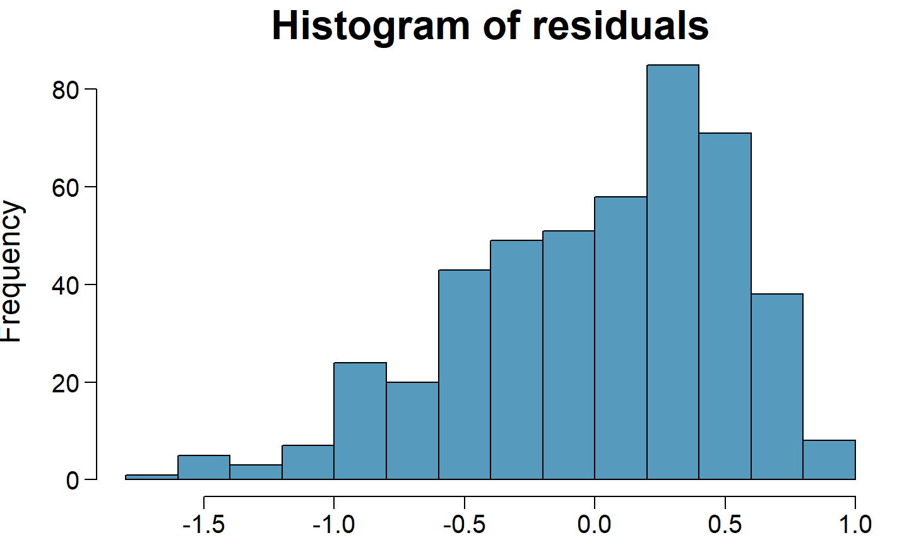
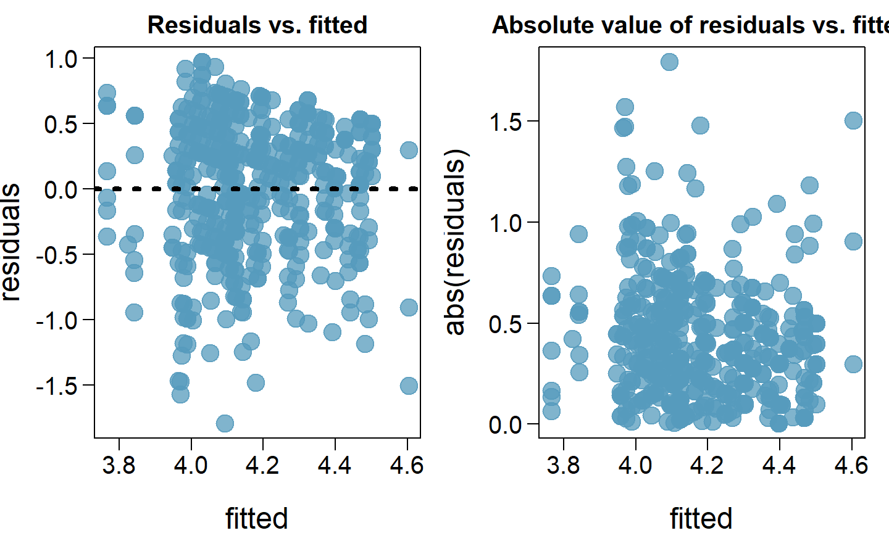
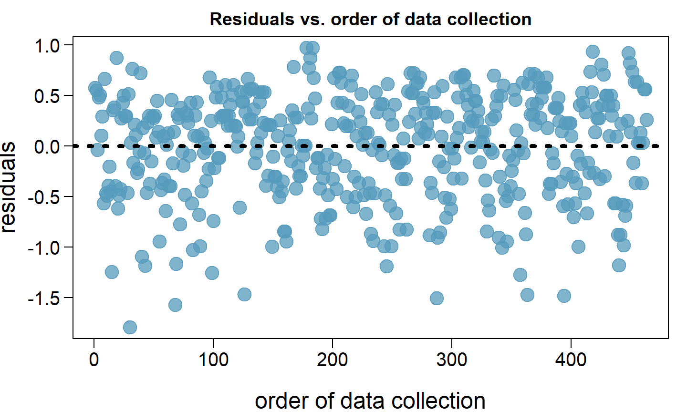
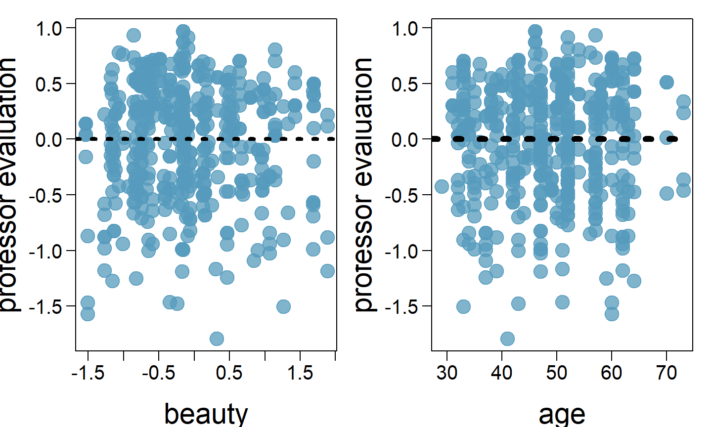

These notes use content from OpenIntro Statistics Slides by
Mine Cetinkaya-Rundel.
These notes use content from OpenIntro Statistics Slides by
Mine Cetinkaya-Rundel.
\[\hat{y} = \beta_0 + \beta_1 x_1 + \beta_2 x_2 + \cdots + \beta_p x_p\]
The model depends on the following conditions;
Residuals are nearly normal (less important for larger data sets)
Residuals have constant variability
Residuals are independent
Each variable is linearly related to the outcome
We often use graphical methods to check the validity of these conditions, which we will go through in detail in the following slides.
Normal probability plot and/or histogram of residuals:

Does this condition appear to be satisfied?
Scatterplot of residuals and/or absolute value of residuals vs. fitted (predicted):

Does this condition appear to be satisfied?
When we did simple linear regression (one explanatory variable) we checked the constant variance condition using a plot of residuals vs. x.
With multiple linear regression (2+ explanatory variables) we checked the constant variance condition using a plot of residuals vs. fitted.
Why are we using different plots?
In multiple linear regression there are many explanatory variables, so a plot of residuals vs. one of them wouldn’t give us the complete picture.
Scatterplot of residuals vs. order of data collection:

Does this condition appear to be satisfied?
Checking for independent residuals allows us to indirectly check for independent observations.
If observations and residuals are independent, we would not expect to see an increasing or decreasing trend in the scatterplot of residuals vs. order of data collection.
This condition is often violated when we have time series data. Such data require more advanced time series regression techniques for proper analysis.
Scatterplot of residuals vs. each (numerical) explanatory variable:

Does this condition appear to be satisfied?
Note: We use residuals instead of the predictors on the y-axis so that we can still check for linearity without worrying about other possible violations like collinearity between the predictors.
Transforming variables
Seeking out additional variables to fill model gaps
Using more advanced methods that would account for challenges around inconsistent variability or nonlinear relationships between predictors and the outcome.
If the concern with the model is non-linear relationships between the explanatory variable(s) and the response variable, transforming the response variable can be helpful.
Log transformation (log \(y\))
Square root transformation (\(\sqrt{y}\))
Inverse transformation (\(1/y\))
Truncation (cap the max value possible)
It is also possible to apply transformations to the explanatory variable(s), however such transformations tend to make the model coefficients even harder to interpret.
All models are wrong, but some are useful. - George Box
No model is perfect, but even imperfect models can be useful, as long as we are clear and report the model’s shortcomings.
If conditions are grossly violated, we should not report the model results, but instead consider a new model, even if it means learning more statistical methods or hiring someone who can help.